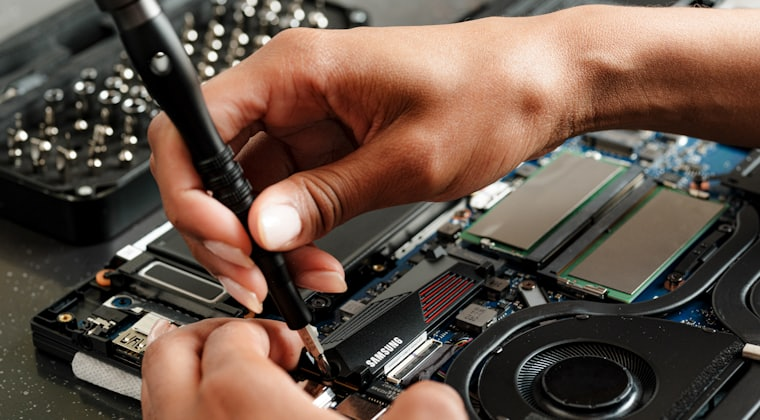
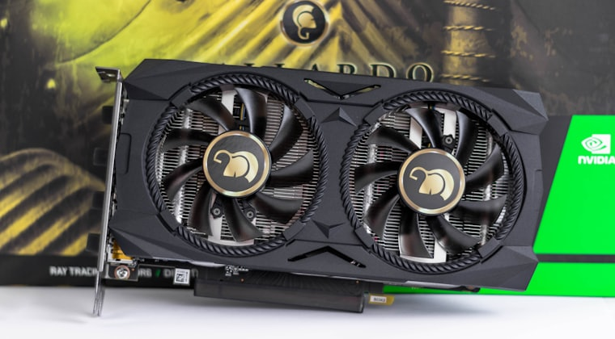
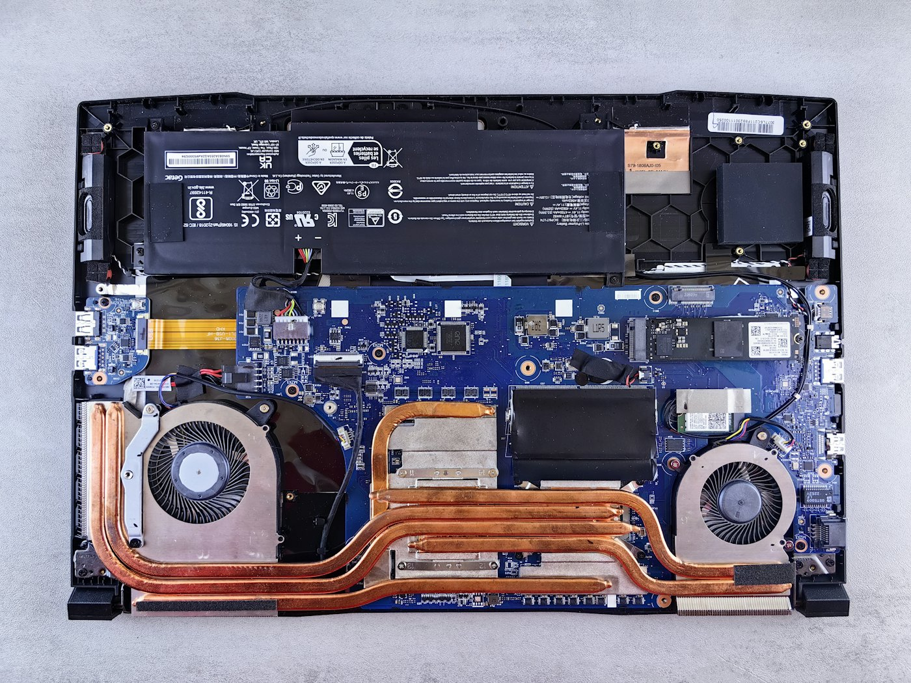

Tu computador
rápido y fresco otra vez.
Limpieza interna, cambio de pasta térmica y optimización, hechos por un ingeniero de sistemas - sin que tu equipo salga a ningún lado.
Bajas tu equipo, te lo devuelvo volando.
Cifras de ejemplo de un equipo típico. Las tuyas te las mido y te las muestro.
Escoges qué necesita tu equipo.
Cada servicio dice exactamente qué le hago y cuánto me toma. El valor depende del equipo y de la falla, así que lo reviso y te lo digo antes de tocar nada.

Portátil
Desarme, limpieza interna, cambio de pasta térmica, limpieza de software, drivers y optimización de arranque.
Pedir este →
Torre / Escritorio
Limpieza interna a fondo, pasta térmica, revisión de ventiladores, limpieza de software y optimización.
Pedir este →Solo software
Sin abrir el equipo: limpieza lógica, quitar basura, optimización de arranque, actualizaciones y antivirus.
Pedir este →Todo incluye un chequeo de salud (disco, batería y temperaturas) con recomendaciones. Si son varios equipos de la misma casa, o me llegas por un vecino, te lo tengo en cuenta.
Todo esto, en cada mantenimiento.
Para que sepas exactamente qué le van a hacer a tu equipo antes de entregarlo.

- Limpieza internaVentiladores, disipador y tarjeta, con aire y herramienta antiestática.
- Pasta térmica nuevaSe retira la vieja y se aplica pasta fresca. Es lo que baja la temperatura de verdad.
- Limpieza de softwareProgramas basura, arranque automático y archivos temporales fuera.
- Actualizaciones y driversWindows y controladores al día, que es la mitad de la lentitud.
- Chequeo de saludEstado del disco, la batería y las temperaturas, con lo que te recomiendo hacer.
- Informe al entregarTe cuento qué encontré y qué hice, sin tecnicismos.
Qué le pasa a tu equipo mientras esperas.
- Llega y se abreSalen los tornillos de la tapa, con la punta que le corresponde a cada uno.
- Fuera la tapaAparece lo de adentro: ventiladores, disipador, disco y batería.
- Ahí está el problemaEl polvo tapa las aletas del disipador. El aire caliente deja de salir.
- LimpiezaAire a presión y pincel antiestático, ventilador por ventilador.
- Pasta térmica nuevaSe retira la vieja, que ya está seca, y se aplica pasta fresca al procesador.
- Se cierra y se pruebaVuelve la tapa, enciende, y se mira la temperatura con el equipo trabajando.
Entre 40 y 60 minutos. Te lo devuelvo encendido y te cuento qué encontré.
Cuatro pasos, todo dentro del conjunto.
Me escribes
Un mensaje por WhatsApp con lo que necesitas y coordinamos la hora.
Bajas el equipo
Lo traes a mi apartamento o subo yo - como te quede mejor.
Mantenimiento
Limpieza, pasta térmica y optimización. Entre 40 y 60 minutos.
Te lo entrego
Encendido, funcionando y volando. Pagas al recibirlo.
Un sábado al mes, aquí en el conjunto.
Concentro varios equipos del conjunto en un solo día y bajo la tarifa por ser jornada. Cupos por turno, para atender a cada vecino bien y no de afán. Escríbeme y te aparto la hora.
Un vecino que sabe de esto.
Vivo aquí mismo, en el conjunto. Trabajo con computadores todos los días y quería ofrecerles a los vecinos un servicio serio, cercano y sin vueltas. Tu equipo queda como nuevo y tú ni tienes que salir.
Lo que todos me preguntan.
¿Cuánto cuesta?
Depende del equipo y de la falla, así que no pongo una lista que después no se cumpla. Escríbeme, reviso el caso y te doy el valor exacto antes de tocar nada. Preguntar no cuesta.
¿Pierdo mis archivos?
No. Antes de formatear o cambiar un disco hago una copia de tus documentos, fotos y descargas, y te la entrego junto con el equipo.
¿Cuánto se demora?
El mantenimiento toma entre 40 y 60 minutos. Si hay que cambiar una pieza depende del repuesto, y te aviso el tiempo estimado cuando te paso el precio.
¿Atienden Mac?
Sí para software, respaldos y configuración. Para cambio de piezas trabajo sobre todo equipos Windows: si es un Mac, escríbeme y te digo de una si puedo o no.
¿Dan garantía?
Sí, 8 días sobre el mantenimiento. Si algo falla por lo que hice, lo reviso sin costo. Los repuestos van con la garantía del fabricante.
¿Tu computador anda lento?
Yo estoy a un mensaje.
Escríbeme por WhatsApp y coordinamos. Aquí mismo, en el conjunto.
Escribir por WhatsApp